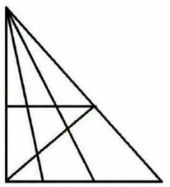

This Week's Brain Teaser (Difficulty: Hard)
How many triangles can you find in this picture?
How many triangles can you find in this picture?

Your mission: Research paper airplane designs and build one that will either fly the longest distance or do the most loopty-loops.
We'll be brainstorming on project ideas after that!